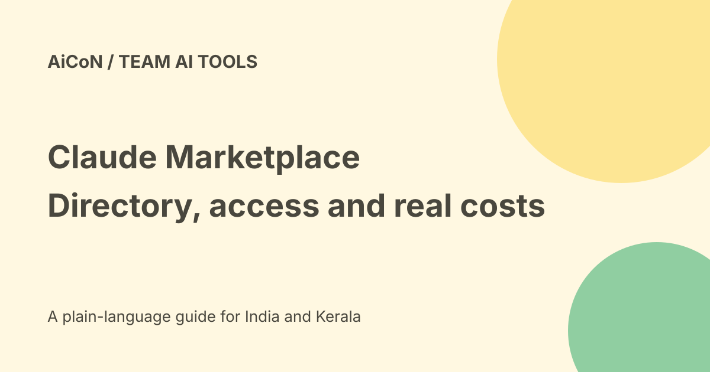

Claude Marketplace: connectors, products and spend limits
Claude Marketplace brings connectors and plugins, agents and products, and service partners into one directory. Those are different things. A connector listing is not proof of free service access, and browsing the directory does not qualify you to spend an Anthropic commitment.

Three sections, different jobs
Connectors and plugins add service access or specialised workflows. Agents and products are software from partner companies. Service partners help organisations deploy or build with Claude.
The official 23 September 2026 launch names services including Atlassian, Google, Microsoft, Notion and Salesforce; software partners include Cursor, Harvey, Lovable and Snowflake. The consulting examples include Accenture, BCG and Deloitte.
What does 2,000-plus mean?
Anthropic's launch says more than 2,000 connectors and plugins combined. It does not say there are 2,000 free plugins or that every item is included in every Claude account.
The currently fetched connectors section separately shows 912 connectors. These are different scopes, not a reason to convert the old combined count into a current plugin-only total. Directory counts can change.
MCP and Agent Skills
The launch points builders to Model Context Protocol, or MCP, and Agent Skills. They provide ways for tools and reusable workflows to connect with Claude.
A shared format does not certify every publisher or make every permission safe. Read the listing, source, service agreement and actual account-access prompt before adding an item.
Committed spend is money
Anthropic says customers can use a portion of their committed spend to buy certain partner software. A commitment is already-contracted spending, not a free gift or a universal consumer allowance.
The official customer-story page says this route remains in limited preview. Customers with a commitment should ask their account team or submit a request to check eligibility. No particular account or India contract was verified here.
Costs can stack
A Claude plan, a connected vendor subscription, model usage, partner software and implementation work can have separate costs. A listing does not establish a final combined price.
No public universal INR checkout total or free-all-items entitlement was verified. Ask for the exact quote, permitted spend portion, taxes, term, renewal and cancellation rules before purchasing.
How to choose a connector
- Begin with one concrete task.
- Open the exact official marketplace listing.
- Check the publisher and supported Claude surface.
- Read the data and action permissions.
- Check existing subscriptions and admin approval.
- Use a harmless test record.
- Inspect what information reaches Claude and what actions it can take.
- Remove access that is no longer needed.
How teams can assess a paid product
- Confirm whether the spending route is available to your organisation.
- Compare the normal contract with the commitment-funded quote.
- Check implementation, support and data-processing terms.
- Verify who can authorise the purchase.
- Review the final amount and limits before signing.
- Test the actual product instead of treating a listing as proof of fit.
Service partners are another category
Consultants and system integrators can help an organisation plan a rollout. Being listed does not mean the work is included in a Claude subscription or that every project has the same rate.
Ask for a scoped proposal with deliverables, responsibilities and support terms. A marketplace directory is a discovery route, not a completed procurement process.
India and practical boundaries
The sources do not establish availability, taxes, data residency or contracting for every Indian team. Malayalam quality depends on the actual workflow and model, not directory membership.
No connector was added, partner contacted or commitment spent for this guide. Account eligibility, prices and integration behaviour remain untested.
What changed since the original post?
We distinguish combined launch counts from the connectors-only directory, add the official limited-preview caveat for committed spending and separate discovery from free access and purchasing permission.
Frequently asked questions
Are all listed tools free?
No such entitlement was verified.
Can every consumer use committed spend?
No. The source describes an eligible-customer limited preview.
Does the listing prove a connector is safe?
No. Review permissions, publisher and data terms.
Sources: Official marketplace launch · Current connectors and plugins section · Official commitment-spend customer stories and preview caveat. Checked 7 October 2026.